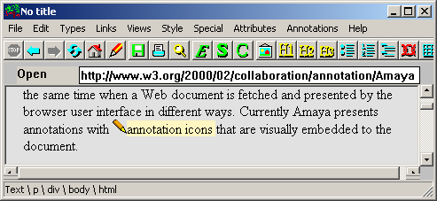

| |
|
Annotations are comments, notes, explanations, or other types of external remarks that can be attached to a Web document or a selected part of the document. As they are external, it is possible to annotate any Web document independently, without needing to edit that document. From the technical point of view, annotations are usually seen as metadata, as they give additional information about an existing piece of data. In this project, we use a special RDF annotation schema for describing annotations.
Annotations can be stored locally or in one or more annotation
servers. When a document is browsed, Amaya queries each of these
servers, requesting the annotations related to that document. Currently Amaya
presents annotations with pencil annotation icons (  )that are visually
embedded in the document, as shown in the figure below. If the user
single-clicks on an annotation icon, the text that was annotated is
highlighted. If the user double-clicks on this icon, the annotation text and
other metadata are presented in a separate window.
)that are visually
embedded in the document, as shown in the figure below. If the user
single-clicks on an annotation icon, the text that was annotated is
highlighted. If the user double-clicks on this icon, the annotation text and
other metadata are presented in a separate window.

An annotation has many properties including: